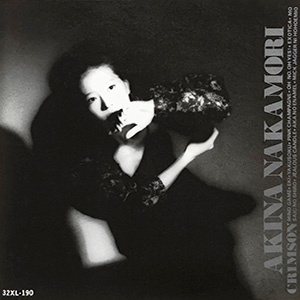

录音室专辑：第10张
发行年份：1986年
发行日期：12月24日
| 歌名 | 作词 | 作曲 | 编曲 |
|---|---|---|---|
| MIND GAME | 許瑛子 | 小林明子 | 鷺巣詩郎 |
| 駅 | 竹内まりや | 竹内まりや | 椎名和夫 |
| 約束 | 竹内まりや | 竹内まりや | 椎名和夫 |
| ピンク・シャンパン | 三浦徳子 | 小林明子 | 鷺巣詩郎 |
| OH NO, OH YES! | 竹内まりや | 竹内まりや | 椎名和夫 |
| エキゾティカ | 湯川れい子 | 小林明子 | 鷺巣詩郎 |
| モザイクの城 | FUMIKO | 小林明子 | 鷺巣詩郎 |
| JEALOUS CANDLE | 吉元由美 | 小林明子 | 鷺巣詩郎 |
| 赤のエナメル | 竹内まりや | 竹内まりや | 椎名和夫 |
| ミック・ジャガーに微笑みを | 竹内まりや | 竹内まりや | 椎名和夫 |
首发规格：黑胶 LP: L-12650，卡带 CT: LKF-8150，CD: 32XL-190
唱片公司：Reprise Records，Warner Pioneer
排行榜：Oricon公信榜LP&卡带周榜第1位（连续3周），1987年度专辑榜第3位
获奖：第29回日本唱片大賞 優秀专辑賞
再发行：
1991年7月17日 - CD: WPCL-421
1996年4月25日 - CD: WPC6-8191
2006年6月21日 - CD、数码下载: WPCL-10287
2006年7月26日 - 数码下载
2012年8月22日 - SACD/CD: WPCL-11145
2014年1月29日 - CD: WPCL-11731
2018年7月4日 - LP: WPJL-10094